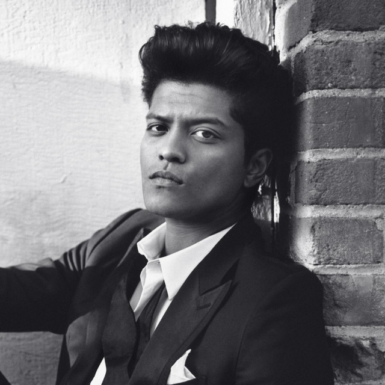
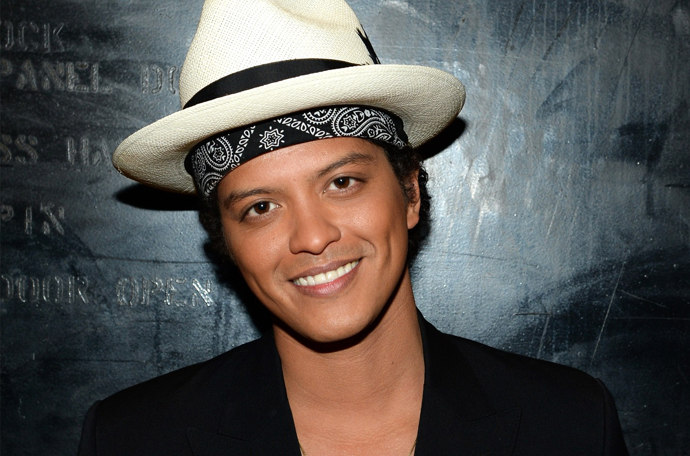

BRUNO MARS




Professionally and in the line of music, we call him BRUNO MARS, but his real name is PETER GENE HERNANDEZ, an American singer, songwriter, record producer, musician, and dancer. He is known for his performances particularly in retro showmanship and he performs wide range of music styles such as pop, R&B, funk, soul, reggae, hip-hop, disco and rock songs. He is accompanied by his band, in chronological order, The Hooligans and the An Evening with Silk Sonic. Out of all his songhits, one of the most famous songs he made are Billionnaire Count on Me, Grenade, Uptown Funk, 24K Magic, That's What I like and Versace on the Floor.

BIRTH: October 8, 1985
BIRTHPLACE: Honolulu, Hawaii
NATIONALITY: American; sometimes considered as a FIL-AM
PARENTS: Father is Half Puerto Rican and Half Ashkenazi Jewish (form Hungary and Ukraine) and Mother is a Filipina emigrated to Hawaii
TOTAL ALBUMS: 7
1. (2010-EP) 1st album: Its Better If You Don't Understand
2. (2010) 2nd album: Doo-Wops & Hooligans
3. (2010) 3rd album: The Lost Planet
4. (2011-EP) 4th album: The Grenade Sessions
5. (2012) 5th album: Unorthodox Jukebox
6. (2016) 6th album: 24k Magic
7. (2021) 7th album: An Evening with Silk Sonic
TOTAL SONGS: 28